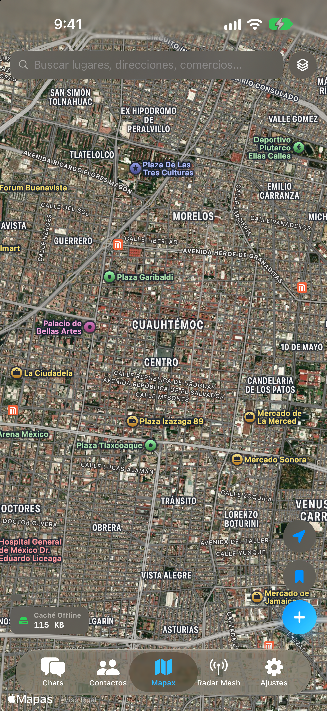
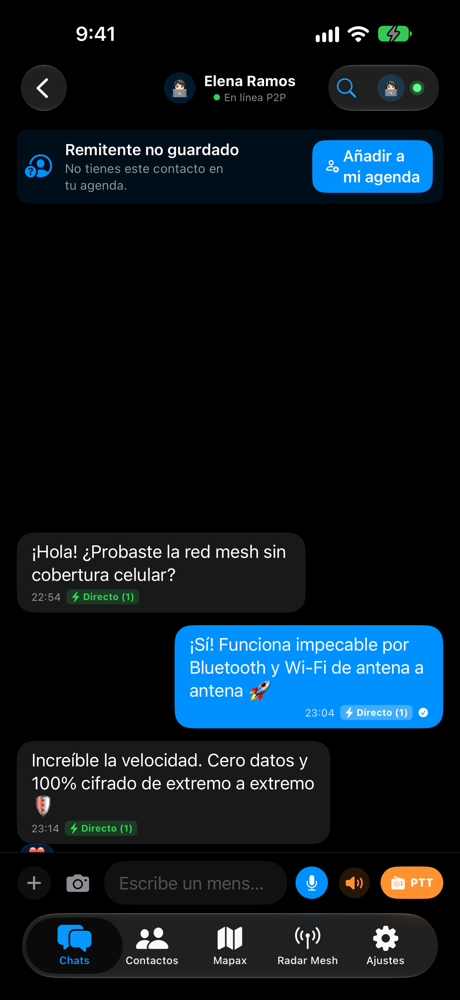
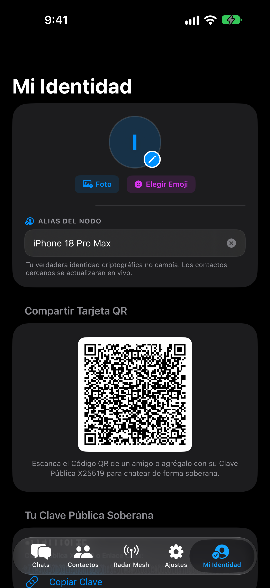

Habla en directo como un walkie-talkie. Comparte mapas que funcionan sin internet. Envía mensajes que saltan de teléfono en teléfono. Sin pedir tu número. Sin servidores que fallen.
Chax guarda mapas completos directamente en tu teléfono. Vista de calles, satélite, brújula en tiempo real hacia tus contactos y registro de tu camino recorrido. Sin gastar un solo megabyte.

Mantén presionado y la otra persona te escucha en tiempo real, palabra por palabra. No hay archivos que subir ni esperar. Y si hay ruido alrededor, Chax convierte tu voz a texto automáticamente.

Tu cuenta se crea en tu propio teléfono. Nadie puede bloquearte, nadie puede cerrar tu cuenta y nadie puede vender tus datos porque no existen en ningún servidor.

Convierte cualquier foto en sticker con un toque. Tu iPhone detecta y recorta el sujeto automáticamente. Envíalo incluso sin cobertura celular.
Crea grupos para tu familia, comunidad o equipo. Elige entre chat libre, moderado o solo anuncios. Comparte historias con fotos que desaparecen solas. Y chatea desde tu Mac con teclado completo.
No tienes que configurar nada. Chax detecta automáticamente cómo enviarlo más rápido.
Momentos en los que ninguna otra app puede ayudarte porque la infraestructura convencional falla.
Con Chax: Tu mensaje no busca una antena lejana saturada. Salta de teléfono en teléfono entre las personas que te rodean en milisegundos.
Con Chax: Mapas offline con brújula, distancia exacta hacia tus amigos y walkie-talkie en directo sin gastar datos.
Con Chax: Tu cuenta vive en tu teléfono. Nadie puede bloquearte ni leer lo que escribes.
Con Chax: Tu teléfono se convierte en una baliza de supervivencia. Los mensajes saltan de casa en casa hasta encontrar a los tuyos.
Hay algo que ninguna otra app de mensajería puede hacer.
| Capacidad | CHAX | Telegram | Signal | |
|---|---|---|---|---|
| Funciona sin internet | ✓ De teléfono a teléfono | ✕ Sin red, muere | ✕ Sin red, muere | ✕ Sin red, muere |
| Sin número de teléfono | ✓ Nunca lo pedimos | ✕ Obligatorio | ✕ Obligatorio | ✕ Obligatorio |
| Mapas offline integrados | ✓ Calles + Satélite | ✕ No existe | ✕ No existe | ✕ No existe |
| Walkie-Talkie en tiempo real | ✓ Sin red ni datos | ✕ Requiere nube | ✕ Requiere nube | ✕ Requiere nube |
| Inmune a caídas mundiales | ✓ Red descentralizada | ✕ Servidor único | ✕ Servidor único | ✕ Servidor central |
Si te quedas sin señal, ya no podrás descargarlo. Instálalo hoy y tenlo listo para el festival, la montaña o el apagón que nunca esperas.
Descargar en TestFlight — Gratis